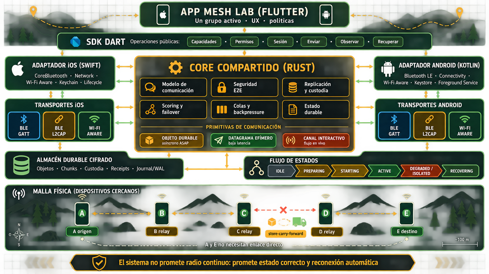

Progreso por línea
Arquitectura
100%
Implementación
0%
Pruebas físicas
0%
Documento maestro · Laboratorio de intercomunicación
Una app experimental para un solo grupo de celulares, respaldada por una infraestructura completa, robusta, modular y reutilizable para comunicación privada por proximidad entre iOS y Android.
Status
Aprobar arquitectura no equivale a haberla implementado. El seguimiento separa decisiones, código y validación física.
Escenario inicial de validación
La primera campaña usa estas condiciones para producir resultados comparables. El core mantiene capacidades y cuotas negociables para otras escalas y aplicaciones.
Registro de arquitectura
Las diez decisiones forman la especificación de referencia que gobierna la implementación y sus gates.
Protocolo independiente del radio. Wi‑Fi Aware acelera; BLE descubre, controla y funciona como fallback.
Ver detalle ↓ A002AprobadaEd25519 + X25519, certificados, discovery rotativo, Noise XX inicial y Noise IK al reconectar.
Ver detalle ↓ A003AprobadaCBOR determinístico, LinkPacket/MeshObject, ACK ranges, chunks de 1 KiB y flow credit.
Ver detalle ↓ A004AprobadaInventarios, replicación controlada, custodia compartida, dedupe y recuperación de particiones.
Ver detalle ↓ A005AprobadaCore determinista reusable en Rust; adaptadores Swift/Kotlin; SDKs iOS, Android y Flutter.
Ver detalle ↓ A006AprobadaPerfiles de tráfico, selección por ETA, diversidad de vecinos, enlaces calientes, make-before-break e histéresis.
Ver detalle ↓ A007AprobadaObjetos durables, datagramas efímeros y canales interactivos; addressing, contratos de entrega, orden y payloads extensibles.
Ver detalle ↓ A008AprobadaABI estable, API común, permisos, estados explícitos, recuperación durable y adaptadores nativos.
Ver detalle ↓ A009AprobadaFlight recorder privado, simulador determinista, conformidad, fault injection, SLOs y dispositivos físicos.
Ver detalle ↓ A010AprobadaSuite exacta, HPKE por destinatario, revocación, recuperación de autoridad, threat model, auditoría y gates de release.
Ver detalle ↓ADRs aprobados
Cada bloque documenta el contrato aprobado, las reglas que debe respetar la implementación y la evidencia necesaria para considerarlo cumplido.
El protocolo es independiente del radio y debe seguir siendo funcional usando solamente BLE. Wi‑Fi aumenta capacidad, pero nunca se convierte en requisito para conservar el grupo o entregar objetos durables.
BLE advertisements para discovery; BLE GATT como control y fallback de datos; BLE L2CAP CoC como canal preferido cuando la combinación real lo soporte; Wi‑Fi Aware como acelerador de alto throughput.
Apple peer-to-peer Wi‑Fi y Android Wi‑Fi Direct no forman la base común. Cada par negocia capacidades, MTU, ventanas y transportes disponibles sin asumir simetría entre dispositivos.
BLE mantiene control y descubrimiento mientras otro canal mueve datos. Puede existir un transporte primario y uno caliente de respaldo; cambiar de radio no crea una sesión lógica nueva ni reinicia el objeto.
Soporte declarado por el sistema operativo no prueba interoperabilidad entre marcas. Cada dirección, rol central/peripheral y combinación iOS↔Android se valida en hardware.
La cercanía no concede confianza. Cada instalación tiene identidad criptográfica; solo certificados de membresía válidos permiten participar en el grupo.
Ed25519 firma identidad y objetos; X25519 establece secretos. La autoridad del grupo firma certificados con miembro, permisos, vigencia y epoch.
Los anuncios usan identificadores rotativos derivados del grupo. No publican IDs estables, nombres, ubicación ni contenido útil para seguimiento externo.
Noise XX autentica el primer encuentro permitido; Noise IK acelera reencuentros conocidos. Anti-replay, transcript binding y claves nuevas protegen cada conexión.
Identidad, discovery, sesión, contenido y epoch usan material diferente. Claves maestras viven en Keychain/Keystore; cambios de membresía rotan el epoch.
El formato separa confiabilidad de enlace y durabilidad mesh. Recibir bytes en una conexión nunca equivale a conservar el objeto ni entregarlo al destinatario.
CBOR determinístico definido con CDDL y vectores canónicos. Toda estructura lleva versión técnica, límites de profundidad, tamaños máximos y validación antes de asignar memoria.
LinkPacket es volátil y pertenece a una conexión. MeshObject es inmutable, firmado, cifrado E2E y sobrevive saltos, radios, cierres y reinicios.
Packet numbers de 62 bits por sesión, ACK ranges, flow-control credits y chunks lógicos iniciales de 1 KiB negociables. Un bitmap permite reanudar solo fragmentos faltantes.
LINK_ACK, CHUNK_COMMIT, CUSTODY_ACK y DELIVERY_RECEIPT expresan garantías distintas y no son intercambiables.
La red compara inventarios antes de transmitir. La propagación es controlada y oportunista, no flooding indiscriminado.
Cada origen mantiene secuencia contigua, rangos faltantes y estado parcial por chunks. El peer solicita exactamente lo que necesita y el dedupe ocurre antes de exponer contenido.
El origen conserva su copia después de transferirla. Un relay acepta custodia únicamente después de validar y confirmar almacenamiento durable completo.
Store-carry-forward permite que subgrupos sigan operando. Cuando reaparece un puente, inventarios, audience epoch y receipts hacen converger los estados.
Lifetime, hop budget, audiencia y políticas limitan cada objeto. Exchanges autenticados, historial de custodia, congestión y ganancia de cobertura deciden el siguiente relay.
La infraestructura no pertenece a Flutter, Mesh Lab ni Convoy. Una implementación determinista compartida evita que iOS y Android desarrollen protocolos incompatibles.
Máquinas de estado, CBOR, criptografía, objetos, replicación, scheduling, scoring y simulación se implementan una vez y se compilan para iOS, Android y host.
Swift controla APIs Apple; Kotlin controla APIs Android. Ambos convierten callbacks nativos al mismo contrato y no duplican decisiones de routing o seguridad.
Transport, ObjectStore, SecureKeyStore, Clock, RandomSource y TelemetrySink aíslan el core de hardware y plataforma.
Swift/Kotlin alojan el engine y los radios; Flutter usa una fachada Dart generada. Ningún frame de radio atraviesa Dart. Payloads y políticas se registran por namespace.
El motor evalúa por separado qué vecinos conservar, qué transporte usar con cada peer y a quién entregar el próximo objeto.
Delivery ratio, goodput efectivo, SRTT, variación de RTT, estabilidad, tiempo sin progreso, costo de setup y tendencia RSSI. RSSI se trata como tendencia, nunca como distancia.
ETA = setupRemaining + bytesPending / effectiveGoodput + retransmissionRisk. CONTROL, INTERACTIVE_SMALL y BULK ponderan latencia, confiabilidad y capacidad de forma distinta.
DISCOVERED → PROBING → AUTHENTICATING → WARM → ACTIVE → DEGRADED → LOST → COOLDOWN. Healthy ≥70, usable 50–69 y degraded <50; EWMA rápida ≈2 s y lenta ≈10 s.
Make-before-break cuando el candidato lleva 2 s saludable y mejora ETA al menos 25%; hold-down 5 s. Hard fail tras error explícito, crypto inválida, peer perdido, 3 RTO o 2.5 s sin progreso.
Objetivo de 3 vecinos autenticados, mínimo 2 si existen. Se premian cobertura distinta, estabilidad, custodia cumplida y baja congestión, no solo el enlace más fuerte.
Mejor peer inmediatamente; segundo alrededor de 150 ms si no aparece progreso durable. No se divide el mismo objeto entre BLE/Wi‑Fi salvo evidencia; cada decisión emite reason code.
El protocolo ofrece garantías genéricas, no una lista cerrada de mensajes. La aplicación elige semántica; el motor decide transporte, ruta y persistencia.
DURABLE_OBJECT entrega asíncrona ASAP; EPHEMERAL_DATAGRAM baja latencia y mejor esfuerzo; INTERACTIVE_STREAM mantiene orden y backpressure mientras exista ruta.
GROUP, MEMBER, MEMBER_SET, ROLE y NEARBY. Audiencia y epoch quedan inmutables al originar el objeto.
BEST_EFFORT, ANY_CUSTODIAN(k), ONE_TARGET, QUORUM(n), ALL_TARGETS y STREAM_ACTIVE definen cuándo termina una operación.
Secuencia por origen, reloj lógico híbrido y causalidad opcional. Objetos inmutables usan supersedes; tombstones firmados no prometen borrar copias ya vistas.
Payload binario opaco con namespace, esquema y versión. Un relay puede custodiar tipos desconocidos bajo cuotas negociadas y techos defensivos.
Cifrado E2E independiente del enlace: clave exclusiva por objeto y HPKE por destinatario según A010. El clip inicial de ocho segundos es configuración, no límite del protocolo.
La app consume una API estable y asíncrona. El core mantiene verdad durable; los adaptadores observan el estado real del sistema operativo sin fingir continuidad de radios.
Inspeccionar capacidades, solicitar permisos, crear/unir grupo, iniciar sesión, enviar las tres primitivas, observar snapshot + eventos, detener y recuperar.
Actor único serializa el core. ABI C pequeña y versionada, bindings generados, handles opacos, buffers con ownership explícito y ninguna operación bloqueante en UI.
IDLE → PREPARING → STARTING → ACTIVE, con DEGRADED, ISOLATED, SUSPENDED y RECOVERING. Sin vecinos no significa sesión destruida.
Transacciones, journal/WAL, checksums y recuperación idempotente. Objetos y custodia sobreviven; claves efímeras y conexiones se renegocian.
Swift: CoreBluetooth, Network, Wi‑Fi Aware, Keychain y restoration best-effort. Kotlin: BLE, Wi‑Fi Aware, Keystore y foreground service visible cuando corresponda.
Código, alcance, retry y acción: permiso, capability, transporte temporal, recursos, seguridad, violación de protocolo o invariante interna. Un enlace no derriba todo el grupo.
El sistema debe explicar y reproducir entregas, retrasos, desconexiones y failovers sin capturar contenido privado. Invariantes de corrección se separan de SLOs estadísticos.
Eventos estructurados y cifrados con secuencia, trace ID, tiempo monotónico/HLC, componente, reason code y referencias seudónimas.
Sin payload, audio, claves, certificados privados ni ubicación exacta por defecto. Exportación solamente por acción explícita.
Mismo Rust Engine, reloj virtual, PRNG con seed, ports falsos, topología dinámica y fault injection reproducible.
Vectores idénticos Rust/Swift/Kotlin/Dart, property tests, state models, fuzzing, crash injection y replay de trazas.
Matriz iOS↔Android, roles invertidos, transportes, suspensión, dashboards, vehículos, movimiento e interferencia.
Cero violaciones, 100k+ operaciones simuladas, 10 teléfonos/60 minutos, SLOs p95 y delivery durable condicionado.
La seguridad se cierra como un sistema operacional completo: suite criptográfica exacta, admisión de un solo uso, cifrado E2E por destinatario, rotación de epochs, revocación, recuperación de autoridad y release gates verificables. Ningún error permite degradación a plaintext o a una sesión no autenticada.
Ed25519, X25519, HKDF-SHA-256, SHA-256 y ChaCha20-Poly1305. Noise XX en primer encuentro e IK en reconexión; negociación autenticada y sin downgrade silencioso.
Clave aleatoria exclusiva por objeto, payload autenticado por chunks y HPKE X25519/HKDF-SHA-256/ChaCha20-Poly1305 para envolverla individualmente a cada destinatario.
Invitación de un uso, prueba de posesión y certificado firmado. Expulsar incrementa epoch, revoca certificado, rota discovery/contenido e invalida sesiones anteriores.
Recuperación 2-de-3 mediante firmas independientes sobre un statement canónico con autoridad nueva, epochs, contador y digest de membresía.
Keychain/Keystore, store y WAL cifrados, secretos con lifetime mínimo y zeroization; payloads, audio, claves e invitaciones nunca entran a logs.
Threat model, fuzzing, sanitizers, SBOM, advisories, builds trazables, auditoría externa, pentest y cero findings críticos o altos abiertos.
Modelo físico
Los extremos no necesitan verse. Cada vecino mantiene una parte del camino y almacena objetos cuando la cadena se rompe.
Arquitectura lógica
Los objetos de producto nunca acceden directamente a radios, criptografía o almacenamiento.
Core reusable
Rust conserva el comportamiento determinista; Swift y Kotlin traducen los eventos nativos.
Mesh Lab, Convoy y futuros productos.
Flutter, Swift y Kotlin.
Namespaces y políticas por app.
State machines · CBOR · Noise · inventarios · scheduling · scoring · simulator
Transport, ObjectStore, KeyStore, Clock, Random y Telemetry.
CoreBluetooth, Network, Wi‑Fi Aware y Keychain.
Bluetooth, Connectivity, Wi‑Fi Aware y Keystore.
Especificación técnica · Rust Engine
El engine implementa semántica, seguridad y estado durable. No conoce Flutter, UIKit, Android, Bluetooth ni Wi‑Fi: solo comandos, eventos y puertos explícitos. Abrir documento implementable completo →
mesh/
├── Cargo.toml workspace, resolver y lints comunes
├── Cargo.lock dependencias reproducibles
├── crates/
│ ├── mesh-types/ IDs, bounded types, tiempo, errores y capabilities
│ ├── mesh-codec/ CBOR determinístico, CDDL, framing y límites
│ ├── mesh-crypto/ suites, Noise, firmas, KDF, AEAD y anti-replay
│ ├── mesh-link/ packets, ACK ranges, RTT, RTO y flow credit
│ ├── mesh-object/ objetos, chunks, contratos y receipts
│ ├── mesh-replication/ inventarios, faltantes, custodia y convergencia
│ ├── mesh-routing/ vecinos, cobertura, scoring y ETA
│ ├── mesh-scheduler/ prioridades, fairness, cuotas y backpressure
│ ├── mesh-store/ traits, transacciones, migraciones y recovery
│ ├── mesh-engine/ reactor, sesiones, comandos, eventos y efectos
│ ├── mesh-ffi/ única frontera unsafe y ABI C estable
│ ├── mesh-sim/ reloj virtual, radios simulados y fault injection
│ └── mesh-testkit/ builders, vectores, oráculos y replay
├── bindings/ios/ XCFramework + fachada Swift
├── bindings/android/ AAR/JNI + fachada Kotlin
├── bindings/flutter/ API Dart + mensajes Pigeon generados
├── protocol/ CDDL, registry, state machines y test vectors
└── tools/ inspector, trace merge, fixtures y benchmarks
Reglas de dependencia
Las crates pequeñas reducen superficie de cambio, hacen visibles los límites de seguridad y permiten probar cada máquina sin cargar runtimes móviles.
| Componente | Puede depender de | No puede conocer | Responsabilidad |
|---|---|---|---|
mesh-types | Dart-free, platform-free; tipos mínimos | Radio, DB, UI, sistema operativo | Vocabulario estable y valores acotados |
codec / crypto / link / object | mesh-types y primitivas auditadas | Flutter, Swift, Kotlin, permisos | Protocolos puros y validación |
replication / routing / scheduler | Tipos y estados validados | APIs BLE/Wi‑Fi concretas | Decisiones reproducibles |
mesh-engine | Módulos internos + traits de ports | Frameworks móviles | Orquestación y única verdad lógica |
mesh-ffi | API pública de engine | Lógica de routing o negocio | Traducir ABI; contener unsafe |
| Swift/Kotlin | ABI C + frameworks de plataforma | Semántica duplicada del protocolo | Radios, lifecycle, permisos y KeyStore |
| Dart | Fachada tipada del SDK nativo | Frames, claves o callbacks de radio | API de aplicación y UX |
Modelo de ejecución
El dominio no depende de Tokio ni de un scheduler global. Un runner nativo posee un hilo serial y conduce una función determinista.
MeshRuntime puede alojar varias sesiones; Mesh Lab crea una. Cada GroupEngine tiene estado y colas propios.
Solo el reactor cambia estado. I/O y criptografía pueden ejecutarse fuera, pero completan mediante eventos con operation ID.
Reloj, random, store y transport son ports. Tests usan tiempo virtual y PRNG sembrado; producción usa fuentes del sistema.
Command queue, event queue, peers, frames, objetos, chunks y tareas tienen cuotas globales y por sesión.
Cada comando devuelve OperationId. Cancelar impide trabajo futuro, sin deshacer commits ni custodia ya confirmada.
Una invariante rota detiene esa instancia, cierra efectos y conserva diagnóstico; nunca continúa con estado posiblemente corrupto.
API interna
La API utiliza enums exhaustivos dentro de Rust y envelopes versionados en la frontera. Ningún callback modifica estado directamente.
| Familia | Ejemplos | Respuesta |
|---|---|---|
| Comandos de sesión | CreateGroup, JoinGroup, Start, Suspend, Resume, Stop | OperationAccepted y transición observable |
| Comandos de contenido | PutDurable, SendDatagram, OpenStream, Cancel | ID estable, progreso y resultado contractual |
| Eventos de transporte | Discovered, LinkUp, BytesReceived, Writable, LinkDown | Effects de handshake, parse, ACK o failover |
| Eventos de store | TxnCommitted, ReadCompleted, QuotaChanged, StoreFailed | ACK durable, requeue, pressure o fatal |
| Eventos de tiempo | TimerFired, LifetimeExpired, RetryDue | Retransmisión, tombstone local o cooldown |
| Efectos | StoreTxn, CryptoJob, TransportAction, SetTimer, EmitTelemetry | Siempre regresan success/failure correlacionado |
Pipelines críticos
El orden de operaciones es parte del protocolo. Un crash en cualquier punto debe producir reintento seguro, no una confirmación falsa.
1. Validar tipo, audiencia, policy y cuota.
2. Reservar origin sequence e idempotency key.
3. Construir header canónico y cifrar payload.
4. Firmar header + ciphertext y calcular chunks.
5. Commit atómico de objeto, chunks y contrato.
6. Emitir Accepted solo después del commit.
7. Scheduler elige peer/transporte y reanuda por bitmap.
1. Limitar frame antes de reservar memoria.
2. Autenticar sesión y verificar anti-replay.
3. Conservar bytes canónicos firmados sin recodificar.
4. Verificar chunk/hash y deduplicar.
5. Commit atómico del fragmento.
6. Emitir CHUNK_COMMIT después de persistir.
7. Verificar objeto completo; aceptar custodia y entregar una vez.
1. Abrir DB y ejecutar migraciones forward-only.
2. Recuperar WAL y validar schema/checksums.
3. Reconstruir índices derivados e inventarios.
4. Resolver operaciones sin completion registrada.
5. Restaurar timers desde lifetime, no conexiones.
6. Consultar capabilities reales de adapters.
7. Reautenticar peers y reconciliar inventarios.
1. Congelar asignación nueva al enlace degradado.
2. Mantener commits ya logrados.
3. Preparar candidato sin cerrar el primario.
4. Autenticar y negociar capabilities.
5. Reanudar desde chunks faltantes.
6. Confirmar progreso durable.
7. Retirar enlace anterior y aplicar hold-down.
Estado y almacenamiento
El store de referencia será SQLite cifrado con WAL. El contenido ya viaja cifrado E2E; una clave local adicional protege metadata operativa en reposo.
| Tabla lógica | Clave | Contenido | Invariante |
|---|---|---|---|
groups | group_id | Autoridad, epoch, policy y schema | Una transición de epoch es monotónica |
members | group_id + member_id | Certificado, rol, estado y vigencia | Certificado verificado antes de uso |
objects | object_id | Header canónico, ciphertext, firma y lifecycle | Inmutable después de commit |
chunks | object_id + index | Bytes, hash y durable flag | Hash válido antes de commit |
custody | object_id + custodian | Estado y receipt firmado | No existe ACK previo al objeto completo |
deliveries | object_id + target | Contrato, progreso y receipt | Entrega a app deduplicada atómicamente |
origin_sequences | group_id + origin | Contiguo y missing ranges | Nunca retrocede |
operations | idempotency_key | Resultado durable de comandos | Repetir comando devuelve el mismo resultado |
Objeto, chunks, custody y outbox cambian en una sola transacción; los eventos se publican después del commit.
Recovery revalida tamaños, hashes, firmas y relaciones. Corrupción entra en cuarentena; nunca se borra silenciosamente.
StoreSchemaVersion es independiente de wire y ABI. Cada migración es transaccional, idempotente y probada con fixtures anteriores.
Tipos y compatibilidad
Los constructores validan una sola vez y producen tipos seguros. Los relays conservan el envelope canónico original para no invalidar firmas ni perder campos futuros.
GroupId, MemberId, PeerId, ObjectId, OperationId y SessionId no son strings intercambiables.
Epoch, OriginSequence y packet number tienen overflow explícito; nunca hacen wrap silencioso.
Instant monotónico mide RTT y timers. HLC ordena objetos; wall clock no decide por sí solo seguridad ni retransmisión.
WireVersion, SchemaVersion, AbiVersion, StoreSchemaVersion y CryptoSuite evolucionan independientemente.
Unknown payloads se guardan opacos. Unknown campos firmados permanecen en los bytes originales; no se decodifican y recodifican al relay.
Chunk, frame, streams, codecs, suites, cuotas y transportes se intersectan por peer; la ausencia produce fallback explícito.
FFI y empaquetado móvil
La ABI usa C estable, handles opacos y envelopes binarios versionados. No expone layout de structs Rust, genéricos, referencias ni enums nativos.
mesh_abi_version() -> u32 mesh_runtime_create(config_bytes, ports_vtable) -> RuntimeHandle mesh_runtime_submit(handle, command_bytes) -> Status mesh_runtime_poll(handle, out_event_buffer) -> PollResult mesh_runtime_notify(handle, native_event_bytes) -> Status mesh_buffer_release(buffer) mesh_runtime_shutdown(handle, mode) -> Status
Input slices viven solo durante la llamada. Output buffers son asignados y liberados por la misma biblioteca. Handles llevan generación para detectar stale/use-after-free. Longitudes se verifican antes de dereferenciar.
Ningún unwind cruza FFI. Errores esperables usan Result. Un panic se captura en el worker boundary, invalida el engine y emite diagnóstico fatal; excepciones nativas se convierten antes de entrar.
staticlib Rust dentro de XCFramework para arm64 device y simulador, distribuido con Swift Package. Un Swift actor aloja runtime y adapters; Keychain firma mediante port.
cdylib por ABI dentro de AAR; Kotlin/JNI aloja runtime y adapters. Se construye arm64-v8a como objetivo físico y x86_64 para emulador; otras ABI se agregan por matriz.
Pigeon genera mensajes tipados hacia Swift/Kotlin. Dart envía comandos de app y recibe snapshots/eventos; radio → native → Rust permanece directo y no atraviesa platform channels.
Frames usan buffers nativos acotados y reutilizables. El payload de aplicación cruza una vez; audio se codifica fuera del core y entra como bytes o descriptor durable.
Memoria, seguridad y calidad
Rust reduce una clase de errores; no reemplaza límites, revisión criptográfica, fuzzing ni pruebas físicas.
| Área | Regla de implementación | Gate |
|---|---|---|
unsafe | #![forbid(unsafe_code)] en crates de dominio; permitido solo en mesh-ffi y wrappers auditados | Inventario y revisión línea por línea |
| Secretos | Tipos sin Debug/Clone accidental, zeroization al liberar y keys mediante ports | Ninguna clave en logs, panic o bundle |
| Dependencias | Versiones fijadas, features mínimas, licencias/SBOM y advisories en CI | Build bloqueado por vulnerabilidad o licencia prohibida |
| Parser | Profundidad, longitud, allocations y CPU acotadas antes de procesar contenido hostil | Corpus fuzz sin crash, hang ni allocation no acotada |
| Concurrencia | Actor de escritura única; sin locks durante I/O; worker pools y queues con capacidad fija | Soak sin deadlock, starvation ni crecimiento retenido |
| Build | fmt, clippy -D warnings, tests workspace, vectors, simulador, Miri/sanitizers donde apliquen | Todo verde para cada target soportado |
| Release | Cargo.lock, toolchain fijado, artefactos firmados, símbolos separados y builds reproducibles | XCFramework/AAR verificables y trazables al commit |
Transportes
La sesión negocia capabilities y utiliza los enlaces disponibles en cada par.
| Tecnología | Rol | iOS | Android | Decisión |
|---|---|---|---|---|
| BLE advertisements | Discovery | CoreBluetooth | Bluetooth LE | Obligatorio |
| BLE GATT | Control + datos degradados | Amplio | Amplio | Fallback funcional |
| BLE L2CAP CoC | Stream | Disponible | API 29+ | Validar interoperabilidad |
| Wi‑Fi Aware | Canal rápido | iOS 26, iPhone 12+ | API 26, hardware opcional | Acelerador preferido |
| Apple P2P / Wi‑Fi Direct | Específico | Solo Apple | Solo Android | No usar como base |
Sesión segura
La invitación inicial es explícita; después, discovery rotativo y Noise reconocen miembros sin identificadores públicos estables.
Certificado válido y claves protegidas.
Valida autoridad, epoch, identidad y transcript.
Wire protocol
LinkPacket resuelve una conexión; MeshObject sobrevive transportes, reinicios y saltos.
| Nivel | Unidad | Responsabilidad | Durable |
|---|---|---|---|
| Enlace | LinkPacket | Packet number, ACK ranges, RTT, pérdida y flow credit | No |
| Transferencia | ObjectChunk | Fragmento de hasta 1,024 bytes y resume | Sí |
| Mesh | MeshObject | ID global, audiencia, lifetime, hop limit, firma y ciphertext | Sí |
Confirmación rápida del enlace actual.
No se repite al cambiar de canal.
El peer lo validó y puede propagarlo.
El miembro firmó la recepción.
Compacto, limitado y verificable.
Monotónico dentro de cada sesión.
Replicación
Solo viajan los objetos o chunks que el peer realmente necesita.
Posee objetos 1–42.
Solicita exclusivamente faltantes.
A conserva el objeto al no recibir confirmación durable.
C solicita solamente chunks faltantes al volver.
Ambos continúan y convergen cuando reaparece un puente.
A007 · Modelo de comunicación
La aplicación elige la semántica requerida; el motor decide rutas y transportes sin confundir comunicación durable con tiempo real.
Persistente, reanudable y store-carry-forward. Sobrevive particiones, cambios de radio y reinicios.
Baja latencia, mejor esfuerzo y relay acotado. Su pérdida no bloquea la sesión.
Orden, backpressure y jitter controlado mientras exista una ruta estable; reporta interrupciones sin prometer entrega diferida.
Audiencia y orden
Cada objeto captura audiencia y epoch al originarse. Los cambios posteriores de membresía no reescriben silenciosamente sus destinatarios.
| Dimensión | Opciones aprobadas | Regla |
|---|---|---|
| Destino | GROUP · MEMBER · MEMBER_SET · ROLE · NEARBY | ROLE se resuelve al emitir; NEARBY lleva presupuesto de saltos. |
| Entrega | BEST_EFFORT · ANY_CUSTODIAN(k) · ONE_TARGET · QUORUM(n) · ALL_TARGETS · STREAM_ACTIVE | El contrato declara cuándo el emisor puede considerar cumplido el envío. |
| Orden | Secuencia por origen · reloj lógico híbrido · causalidad opcional | No se bloquea indefinidamente por un objeto ausente; las llegadas tardías se integran determinísticamente. |
| Prioridad | CONTROL · INTERACTIVE · BULK · BACKGROUND | Colas justas ponderadas impiden que una carga grande bloquee control o tráfico interactivo. |
Ciclo y extensibilidad
Los payloads son binarios opacos con namespace, esquema y versión técnica. Una app registra handlers; un relay autorizado puede custodiar contenido desconocido sin descifrarlo.
supersedes enlaza una revisión; un tombstone firmado solicita retractación sin prometer borrar copias vistas.
Enlace, commit durable, custodia, aceptación por la app y consumo humano son comprobantes distintos.
Clave exclusiva por objeto y HPKE por destinatario. El relay custodia ciphertext sin acceder al contenido.
Tamaños, codecs, cuotas, streams y límites se negocian con techos defensivos.
El clip de ocho segundos es configuración de prueba. Un stream estable podrá ofrecer walkie-talkie en vivo con fallback durable.
Los recibos de lectura o reproducción son opcionales y requieren una política explícita.
A008 · SDK y lifecycle
Flutter consume un contrato estable. Rust conserva protocolo y estado; Swift y Kotlin traducen radios, permisos, almacenamiento seguro y lifecycle.

Capacidades, permisos, grupo, sesión, envíos, streams, snapshot + eventos, parada y recuperación.
Versionada, bindings generados, handles opacos y ownership explícito de buffers entre Rust, Dart, Swift y Kotlin.
Un event loop modifica el core; callbacks nativos entran como eventos ordenados sin bloquear la UI.
Continuidad verificable
La sesión persiste aun sin vecinos. El SDK nunca reduce el estado a un booleano conectado/desconectado.
| Área | Contrato aprobado | Resultado |
|---|---|---|
| Sesión | IDLE → PREPARING → STARTING → ACTIVE → DEGRADED / ISOLATED → RECOVERING | La UI muestra el estado real sin destruir el grupo durante una partición. |
| Persistencia | Transacciones, journal/WAL, checksums y recuperación idempotente | Objetos, chunks, custodia y receipts sobreviven cierres inesperados. |
| Claves | Identidad en Keychain/Keystore; claves de enlace efímeras | Un reinicio restaura confianza, pero negocia una conexión criptográfica nueva. |
| Eventos | Snapshot inicial + cursor + secuencia monotónica | No existen ventanas silenciosas al reconectar la UI. |
| Parada | DRAIN · PERSIST · recuperación posterior | Se puede finalizar limpiamente o apagar radios conservando pendientes. |
CoreBluetooth, Network, Wi‑Fi Aware, Keychain y state restoration cuando el sistema lo permita.
BLE, Wi‑Fi Aware, Keystore y foreground service connectedDevice cuando sea necesario.
Cada error declara código, alcance, retry y acción; una falla de enlace no derriba el grupo completo.
Mapa de dependencias
No se adelantan mensajes sobre un transporte no validado. Cada gate protege las fases posteriores.
Monorepo, crates, schemas, CI y builds host/mobile.
Invariantes sin radios.
Hardware real por pares.
Relay y recuperación.
Movimiento y obstáculos.
Auditar y certificar.
Roadmap completo
La arquitectura está cerrada. Los tiempos se calibrarán al completar F0 y el primer spike físico de interoperabilidad.
A001–A010 aprobadas; contratos, seguridad, invariantes, SLO y gates documentados.
Crates Rust, bindings, ports, CI, linters, builds reproducibles y app Mesh Lab.
CBOR, framing, Noise, store, inventarios, ACK, flow control y simulación de pérdida, latencia y particiones.
Discovery, GATT y spike L2CAP. Medir MTU, conexiones, throughput, RTT y recuperación durante 60 minutos.
Integrar radio/core. Probar A↔B↔C, custodia, inventarios, resume, dedupe y particiones.
Pairing mixto, data paths, scoring, ETA, histéresis y make-before-break hacia BLE.
Crear/unir el grupo, observar miembros y enlaces, intercambiar payloads extensibles y validar texto, ubicación, alertas, datos binarios y audio walkie-talkie. Especificación Flutter → · Prototipo visual →
Sesiones de una hora, marcas distintas, orden cambiante, cola bajo presión, cierres y recuperación.
Dashboards, distancias, curvas, elevación, relays ausentes e interferencia real.
Auditoría, fuzzing, pen test, privacidad, revocación, autoridad, API pública y plan de integración.
SLOs iniciales
Valores preliminares que se calibrarán con dispositivos reales en F2.
Dentro del TTL cuando existe ruta y capacidad.
Sesión autenticada cálida.
Standby previamente saludable.
Integridad, autorización, custodia y dedupe.
Sin violar invariantes.
Ocho segundos, hasta cuatro saltos estables.
Sin crash, deadlock ni crecimiento retenido.
Negociable y reanudable.
Referencias
MANET, DTN, estándares de codificación y documentación oficial de plataforma y toolchain.